LA APP DE LA OPOSICIÓN
Oposición TCEE, en el bolsillo
La web pone el temario y los test. La app pone el día a día: cuándo cantas, qué temas entran, cuánto falta para el examen, cómo te fue la última vez y qué probabilidad llevas. Y, si tienes preparador, os enlaza.
En el ordenador o en cualquier móvil (también iPhone), sin instalar nada. Con tu cuenta de Google ves lo mismo que en la app.
¿Te han cancelado la clase? Pide el cante a otros preparadores desde la app. Así funciona.
- Gratis y sin anuncios
- Tus datos solo los ves tú
- Funciona sin cuenta
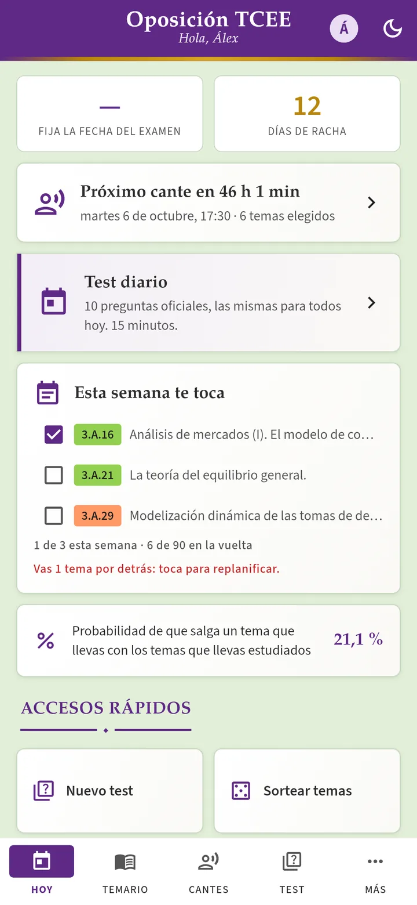
¿Te cancelan la clase? Otro preparador te la coge
Tu preparador se pone enfermo, tiene un viaje o, simplemente, esa semana no puede. Hasta ahora tocaba escribir a unos y a otros para ver si alguien te cogía el cante. Con la app lo pides una vez y les llega a los preparadores que estén disponibles.
- Pide el cante. Desde el cante cancelado («Buscar preparador alternativo») o desde Más → Preparadores, para cualquier clase suelta.
- Di cuándo puedes. El día y una franja de horas (por ejemplo, de 16:00 a 21:00) o una hora fija. No hace falta poner duración.
- Elige los temas que llevas. Salen ya marcados los del cante o los que tienes como estudiados, y los cambias si quieres. También vale para el dictamen de coyuntura del primer ejercicio.
- A quién se lo pides. A todos los preparadores verificados o solo a los que elijas. Les llega un aviso al momento.
- Quien lo coge elige la hora dentro de tu franja. Los dos recibís el nombre y el teléfono del otro, con un botón para escribiros por WhatsApp, y el cante aparece en vuestras agendas.
Mientras nadie la coja, puedes retirar la petición. Los preparadores ven el día, las horas y los temas, pero no ven tu nombre ni tu teléfono hasta que uno de ellos la coge, y solo ese.
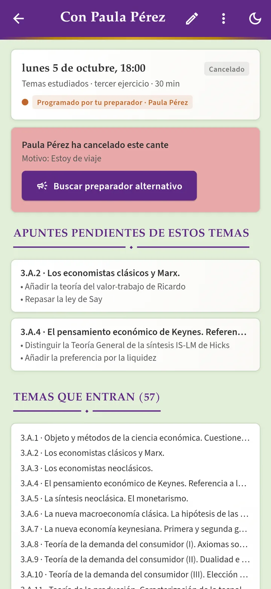
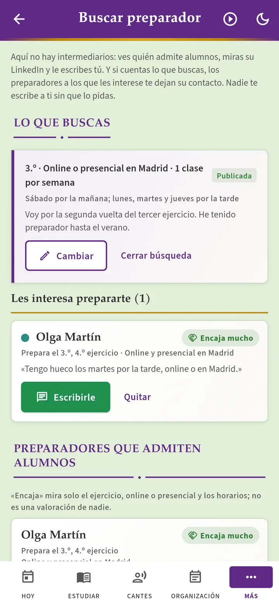
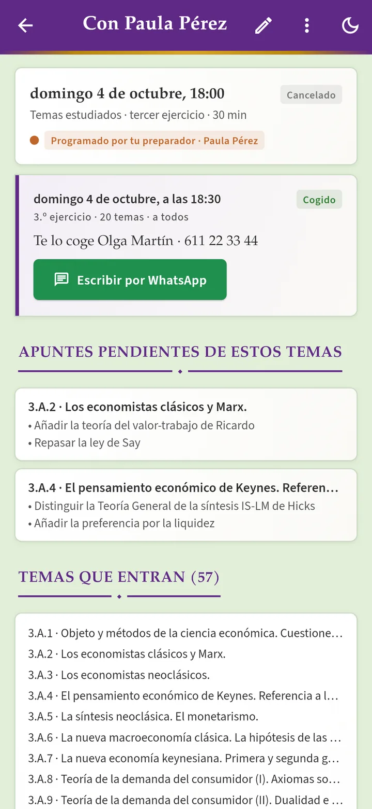
Si eres opositor
- No pierdes la semana de cante aunque falle tu preparador.
- Puedes pedir clases sueltas aunque no tengas preparador fijo.
- Solo te escriben preparadores verificados.
Si eres preparador
- Ves en un tablón los cantes que buscan preparador, con los temas que entran.
- La app te avisa si ya tienes otra clase a esas horas.
- Al cogerlo, el alumno pasa a tu semana con su teléfono.
La idea
Preparar esta oposición no es solo estudiar temas: es sostener durante años una rutina de vueltas al temario, cantes semanales y test, y saber en cada momento dónde estás. Eso se suele llevar repartido entre una hoja de cálculo, el calendario del móvil, un cronómetro, una bolsa con papelitos y la memoria.
La app reúne todo eso en un solo sitio y lo ordena alrededor de una pregunta: ¿qué me toca hoy? No sustituye a la web ni al temario; se apoya en ellos. Descarga de aquí los temas, las preguntas oficiales y la organización del temario, y añade lo que solo tiene sentido en el móvil: avisos, cuenta atrás, sorteo, cronómetro y un diario de cómo va cada cante.
Gratis y sin anuncios
Como el resto de materiales de la web. No hay compras ni publicidad.
Sin cuenta, si quieres
Todo funciona guardando los datos en tu móvil. La cuenta de Google es opcional y sirve para sincronizar con la web y con tus otros dispositivos.
Siempre al día
El contenido se descarga de la web: cuando se actualiza un tema o se añaden preguntas, la app lo recibe sin reinstalar nada.
Tus datos solo los ves tú
Ni otros opositores ni nadie más. Lo único que compartes es lo que decidas enseñar a tu preparador, y puedes exportarlo o borrarlo todo desde la propia app.
En un minuto
Cinco bloques
La app se organiza en cinco pestañas, una por cada cosa que se hace con ella.
Hoy
Lo que toca, nada más abrir.
- Días que faltan para tu próximo ejercicio (la fecha la pones tú) y cuenta atrás al próximo cante.
- Test diario: diez preguntas oficiales, las mismas para todos cada día.
- Preguntas pendientes de repaso y racha de días seguidos.
- Probabilidad de que salga un tema que llevas con los temas que llevas estudiados.
Temario
Estudiar, con el mapa delante.
- Todos los temas por ejercicio y parte, con buscador y PDF que se pueden descargar para leer sin conexión.
- Organización del temario: los bloques con su código de colores, esquemas con las conexiones entre temas y «por dónde seguir».
- Agenda de cada tema: apuntes para la próxima vuelta, vueltas dadas, cómo fue al cantarlo y un test con sus preguntas.
- Probabilidades: qué probabilidad tienes de que salga un tema que te sabes, y qué pasaría si te supieras más.
- Cronograma (en prueba): planifica una vuelta al 3.º o al 4.º, a tantos temas por semana o hasta una fecha. Propone un orden por bloques y conexiones, intercala los temas más memorísticos, te dice cada semana lo que toca y, si te retrasas, lo reparte de nuevo. Puedes compartirlo con tu preparador para que te proponga cambios.
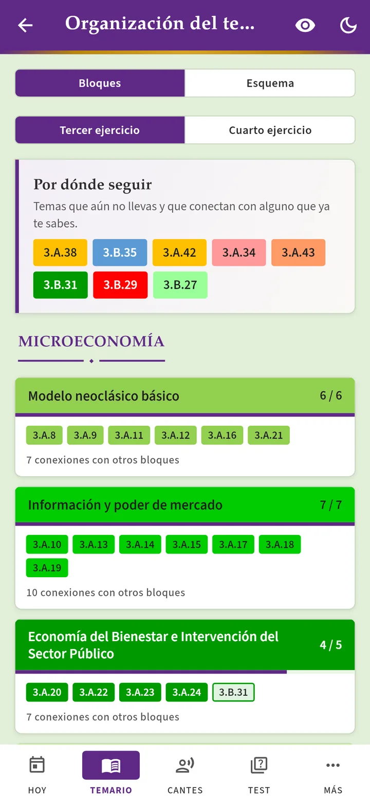
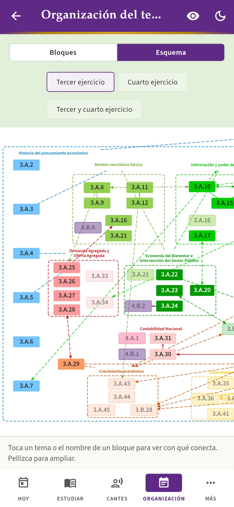
Cantes
Programar, cantar y anotar.
- Agenda: calendario de cantes con repetición semanal, avisos la víspera y una hora antes, y exportación al calendario del móvil.
- Cantar: sorteo como en el examen o de tu propia bolsa de temas, con prioridad opcional a los que flojean; cronómetro de preparación y exposición que avisa con la pantalla apagada, y grabación para escucharte.
- Diario: qué tema cantaste, cuánto duró, cómo fue y qué te dijeron. Con eso se detectan los temas flojos.
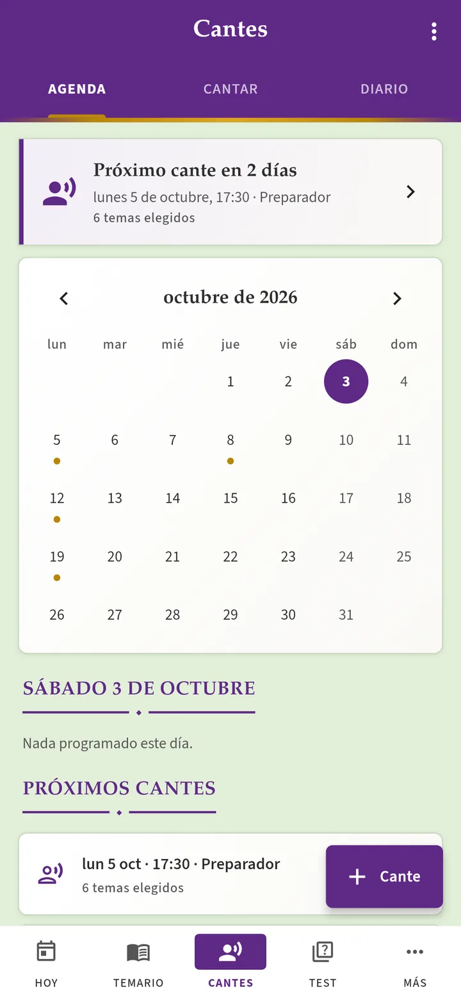
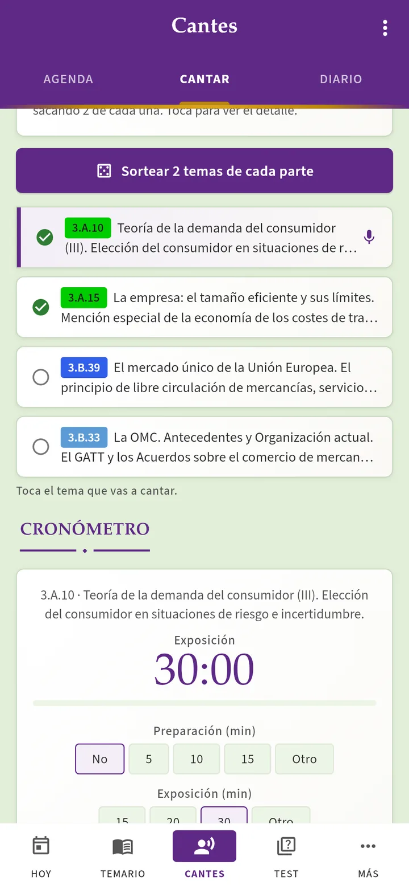
Test
El simulador de la web, en el móvil.
- Las mismas preguntas oficiales, los mismos filtros (temas, bloques, exámenes) y el mismo baremo.
- Resultados con puntuación por bloque y revisión pregunta a pregunta.
- Estadísticas y repaso espaciado de las preguntas falladas.
- Con cuenta, el historial es el mismo que en el simulador de la web.
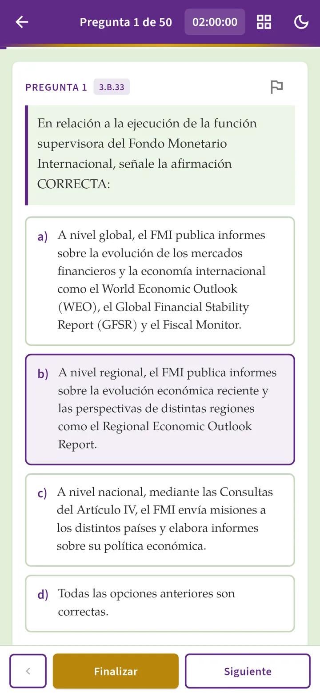
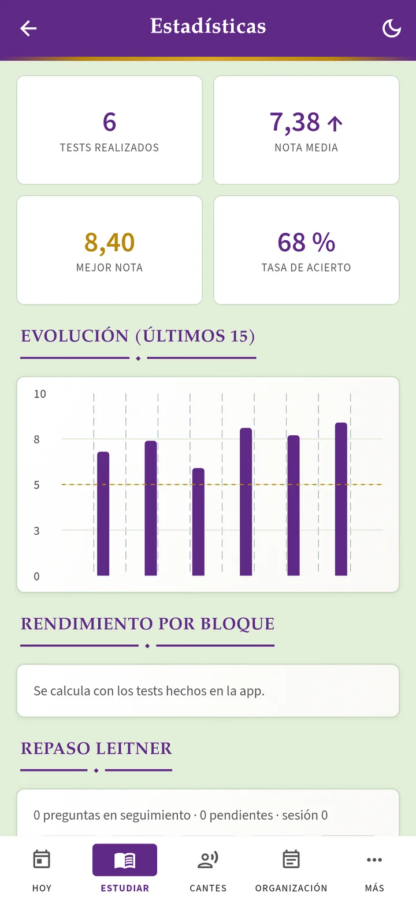
Más
Lo que no es del día a día.
- Convocatoria: la fecha de cada ejercicio y tus propios hitos.
- Horario de estudio semanal, con las horas que dedicas a cada cosa.
- Preparadores: enlazar con el tuyo o llevar a tus alumnos.
- Cuenta, tema claro u oscuro, descargas, enlaces útiles y exportación de tus datos.
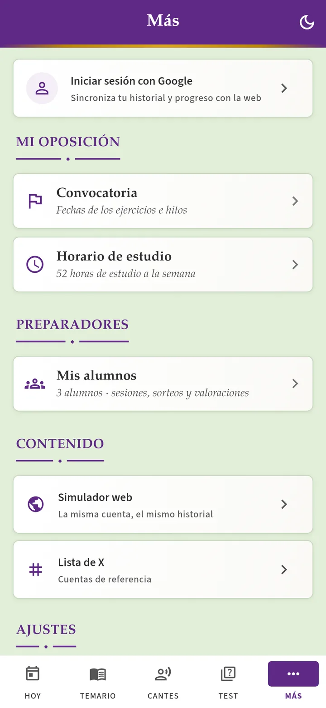
Para preparadores
El preparador también tiene su sitio en la app. Activa «Soy preparador» en Más → Preparadores y lleva a sus alumnos desde el móvil: programa las sesiones de cante (una a una o en grupo), sortea entre los temas que lleva cada alumno, cronometra, valora y consulta su ficha, con lo que ha cantado, cómo le ha ido y qué temas flojean.
Preparador y alumno, enlazados
- El preparador inicia sesión y la app le da un código de seis caracteres.
- El alumno lo escribe en Más → Preparadores → Tengo preparador.
- Desde entonces, las sesiones que programa el preparador aparecen en la agenda del alumno y sus valoraciones llegan a su diario de cantes.
Con los alumnos que no usan la app funciona igual, solo que sin enlace: el preparador apunta los temas que llevan y les envía el informe de cada cante por mensaje o por correo.
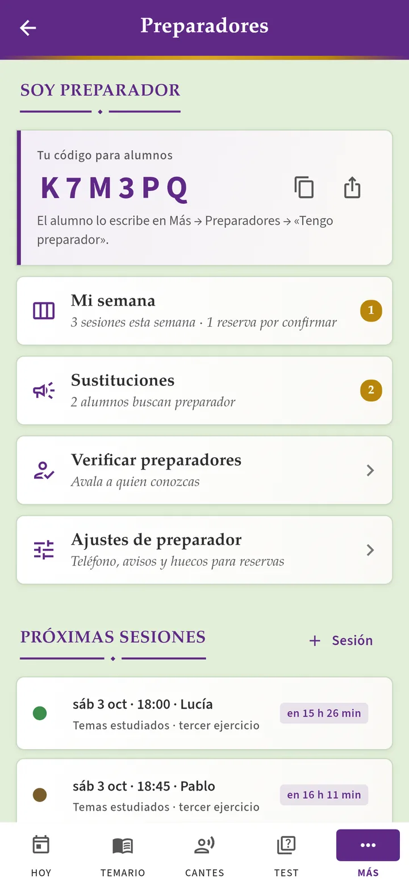
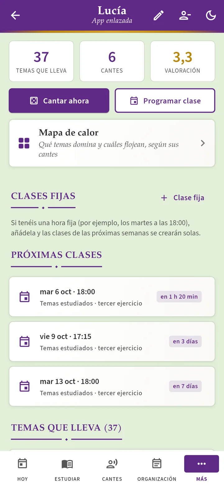
Qué ve el preparador
- Los temas que el alumno marca como estudiados o en repaso.
- Sus cantes: fecha, tema, tiempo, valoración y comentarios.
Qué no ve
- Los test ni sus resultados.
- Las notas y apuntes de cada tema.
- Las grabaciones, que no salen del móvil.
El enlace lo crea el alumno y cualquiera de los dos puede romperlo cuando quiera. Las notas que el preparador toma sobre un alumno son privadas.
Preparadores verificados
Para dar su código a alumnos o coger sustituciones, a un preparador lo tiene que verificar otro preparador ya verificado. Así nadie puede hacerse pasar por preparador, y la verificación se puede retirar si hace falta. En el directorio de preparadores verificados ves qué ejercicios prepara cada uno y su LinkedIn.
Varios preparadores
Si tienes más de un preparador, cada uno tiene su color en tu agenda y puedes ver solo los cantes de uno. El preparador, igual con sus alumnos.
Su semana, ordenada
Semana y mes con todas sus clases, aviso si dos se solapan, clases fijas que se programan solas y cancelar o cambiar la hora con un toque. Si quiere, sus alumnos pueden reservar en sus huecos libres.
Sustituciones
Si un preparador cancela, el alumno puede pedir a otros preparadores verificados (a todos o a los que elija) que le cojan el cante. El alumno elige los temas que lleva y da un día y una franja de horas (por ejemplo, de 16:00 a 21:00); a los preparadores les llega un aviso y quien lo coge elige la hora dentro de la franja. Entonces los dos reciben el teléfono del otro para hablar por WhatsApp.
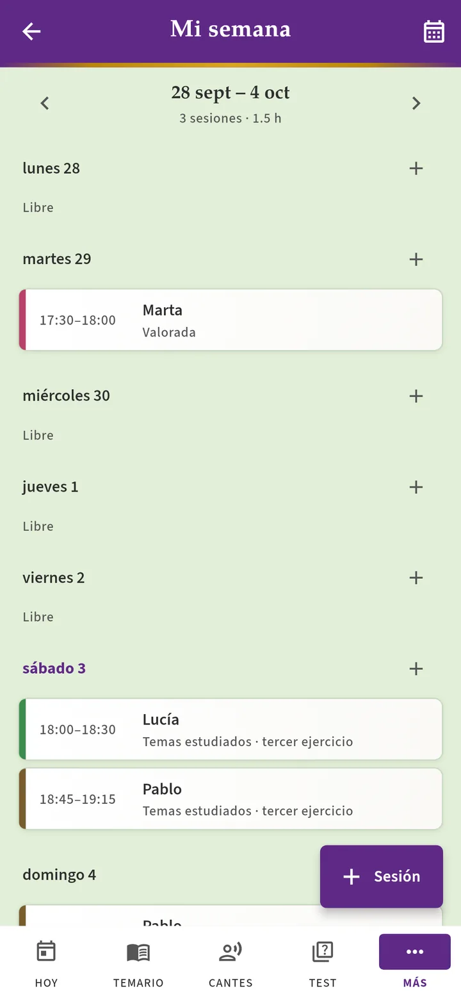
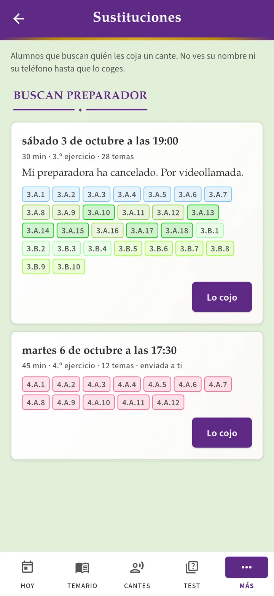
Tus datos, solo para ti
Nadie más ve lo que haces en la app: ni otros opositores ni nadie.
- Sin cuenta, todo se queda en tu móvil o en tu navegador y no sale de ahí.
- Con cuenta de Google, tus tests, temas, notas, cantes y planificación se guardan a nombre de tu cuenta para tenerlos en todos tus dispositivos. Las reglas de seguridad de la base de datos solo dejan leerlos a tu propia cuenta: ningún otro usuario de la app o de la web puede verlos.
- Tu preparador solo ve algo si tú le das acceso con su código, y aun así solo los temas que marcas y tus cantes; nunca tus tests, tus notas ni tus grabaciones. Puedes quitárselo cuando quieras. Sus otros alumnos no ven nada tuyo.
- Si pides una sustitución, los preparadores a los que la envías ven el día, la hora y los temas, pero no quién eres. Tu nombre y tu teléfono solo los recibe el que la coge, y tú recibes los suyos.
- Las grabaciones de tus cantes no se suben a ningún sitio.
- Sin publicidad ni analítica: tus datos no se venden, no se ceden y no se usan para nada más que para que la app funcione. Yo tampoco los consulto.
- Son tuyos: en Más → Cuenta puedes descargarlos o borrarlos todos, de la nube y del dispositivo, con un solo botón.
Cómo instalarla
De momento la app está disponible para Android como versión de prueba, fuera de Google Play:
- Pulsa Descargar para Android desde el móvil. Se descarga un fichero llamado
oposicion-tcee.apk. - Ábrelo. Android avisará de que viene de fuera de la tienda y pedirá permiso para instalarlo: acéptalo solo para esta instalación.
- Abre la app. Puedes usarla sin más o iniciar sesión con Google en Más → Cuenta para sincronizar.
Cuando haya una versión nueva, la propia app lo avisa en «Hoy». Se instala encima de la anterior y no se pierde nada.
En el navegador
No hace falta instalar nada: abre victorgutierrezmarcos.es/app/abrir/ en el ordenador, la tableta o un iPhone e inicia sesión con la misma cuenta de Google que en el móvil. Si quieres tenerla a mano como una aplicación más, Chrome y Edge ofrecen «Instalar» en la barra de direcciones, y en el iPhone, Safari → Compartir → «Añadir a pantalla de inicio».
La versión web es la misma app, con dos diferencias: no puede mandar avisos ni recordatorios, y los PDF se leen con conexión. Lo demás (agenda, sorteo, cronómetro, test, diario, preparadores) funciona igual y se sincroniza solo.
Preguntas frecuentes
¿Hay versión para iPhone?
No como app de la App Store, pero en el iPhone puedes usar la versión para el navegador y añadirla a la pantalla de inicio desde Safari. Con tu cuenta de Google tendrás lo mismo que en Android.
¿Necesito una cuenta?
No. Sin cuenta, todo se guarda en tu móvil (o en tu navegador). La cuenta de Google hace falta para tres cosas: compartir el historial de test con la web, sincronizar entre el móvil y el ordenador y enlazar con un preparador.
¿Funciona sin conexión?
Sí. Lo ya descargado (temario, preguntas y los PDF que guardes) sigue disponible sin red, y lo que anotes se sincroniza cuando vuelva la conexión.
¿Trae las fechas de la convocatoria?
No. La app no incluye fechas oficiales: las de cada ejercicio las pones tú, con la fecha conocida o con la que estimes, y a partir de ellas se calculan las cuentas atrás.
Me han cancelado una clase, ¿cómo encuentro otro preparador?
Abre el cante cancelado y pulsa «Buscar preparador alternativo» (o, para una clase suelta cualquiera, ve a Más → Preparadores). Indica el día, una franja de horas y los temas que llevas, y elige si se lo pides a todos los preparadores verificados o solo a algunos. En cuanto uno lo coja, recibirás un aviso con su teléfono para hablar por WhatsApp. Lo explica esta sección.
¿Alguien más puede ver mis datos?
No. Ni otros opositores ni nadie: solo tu cuenta puede leerlos. La única excepción la eliges tú, el preparador al que des tu acceso, que ve tus temas y tus cantes y nada más. Lo explica esta sección.
¿Qué datos guarda y cómo los borro?
Los detalla la política de privacidad. La app no tiene publicidad ni herramientas de análisis, y desde Más → Cuenta puedes exportar todos tus datos o borrarlos de la nube y del dispositivo.
He encontrado un fallo o tengo una idea
Escribe a contacto@victorgutierrezmarcos.es. La app está en pruebas y cualquier comentario ayuda.